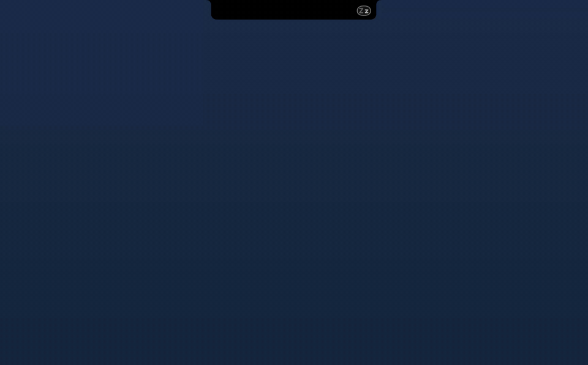

A tiny robot in your notch that tells you when Claude Code needs you
You leave Claude Code working, switch to something else and forget to come back. Psiu watches every session from the notch and calls you, with a color and a sound, the moment one finishes or asks for permission.
Free and open source · macOS 14 or later · No account, no internet


“Psiu!” is how Brazilians say “psst!”
The little sound you make to get someone’s attention. That is the whole job: a robot that stays quiet while things are fine and calls you when they are not.
One look tells you everything
The robot’s color and eyes change with your sessions. With several open, it always shows the most urgent one.

Working
Eyes scanning while Claude works.
Background
The turn ended, but shells, monitors or subagents are still running. Psiu hides in the notch and peeks out now and then.
Tired
A working session passed 80% of its context and is close to being compacted: Psiu turns purple, with drooping eyes and a drop of sweat.
Needs you
Eyes and a “!” take turns, with a sound now and a reminder every 2 minutes.
On fire
Waiting for you for over 10 minutes: eyes on fire, a red edge around the notch and Sosumi every minute.
Burnt
Over 30 minutes: X eyes, smoke and silence. It shakes off the soot when you finally answer.
Done
A happy hop and a sound. One more reminder if you haven’t looked.
Headband
Finished, but the session was compacted along the way: Psiu wears a purple headband. Time to clear it with /clear.
Idle
Half-closed eyes: finished, and you’ve already seen it.
Sleeping
“Z z” eyes when no session is open.

A little dot for what the robot can’t show
- Green dot: another session finished while the robot is busy with something more urgent. On a MacBook, the notch widens a little while it is lit, so the camera doesn’t hide it.

Click the notch. It stretches into a panel.
No pop-up balloon: the notch itself grows down, in solid black, and folds back when you click anywhere else.
- Plan limits that look ahead. Your 5-hour window and week, and, based on the last hour, whether your pace runs out before the reset.
- What each session did. A one-line summary of what it finished or what it is asking for, plus its context usage, in purple above 80%.
- Compacted sessions, flagged. A “compacted Nx” tag, and once the session finishes, a tip to clear it (/clear) before your next prompt.
- One click to the right terminal. Terminal and iTerm jump to the exact tab; VS Code, Cursor and others come to the front.
- An honest mirror. How long agents worked today, how long they waited for you, your average response time and how many Psius burnt out waiting.
Works on your external display too
On screens without a notch, Psiu draws one of the same size at the top. Show it on one display or all of them.
Install in a minute
Download
Get Psiu.dmg from the latest release.
Drag
Open it and drag Psiu into Applications.
Allow
First launch: macOS blocks unsigned apps. Go to System Settings → Privacy & Security and click Open Anyway.
Connect
Psiu asks to connect to Claude Code. Click Connect, then restart your open sessions.

Requires macOS 14 Sonoma or later, on Apple silicon or Intel, and Claude Code. Plan usage needs Claude Pro or Max. Psiu speaks English, or Brazilian Portuguese when that is your Mac’s language.
Private by design
Psiu never connects to the internet, never reads passwords or tokens and keeps everything in ~/.psiu on your Mac. It only uses official Claude Code hooks and the status line, and the one setting it changes, ~/.claude/settings.json, gets a backup first. Uninstall from the robot’s menu and your previous status line comes back.
Questions
Does it work with the Claude app or claude.ai?
Not yet. Only Claude Code exposes what a session is doing. The Claude app has its own “response completed” notification in Settings.
Why does macOS block it the first time?
Psiu is free and not notarized by Apple, which costs a paid developer account. Open Anyway in Privacy & Security is a one-time step.
Will it slow Claude Code down?
No. Each hook is a tiny local call that writes a small file and exits.
Can I build it myself?
Yes. It is a Swift package with no dependencies. Run bash build-dmg.sh and you get the same app and installer.
Can I fork it?
The code is MIT, so yes, even commercially. The Psiu name, the robot and the icon stay with the author: give your fork its own name and character.

Made by Jaime Brolesi
Built with Claude to stop losing time to sessions waiting in the background. If Psiu helps you, a star on GitHub or a post about it means a lot.
★ Star on GitHub LinkedIn GitHub